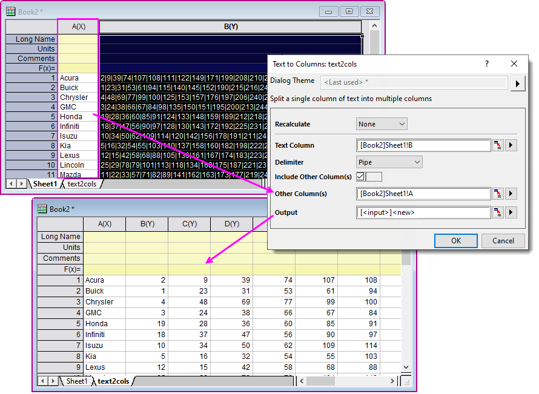

FAQ-1050 Verfügt Origin über ein Werkzeug wie MS Excels Textkonvertierungs-Assistent (Text in Spalten)?
Origin-Tool-Like-Excel-Text-To-Columns-Wizard
Letztes Update: 05.03.2020
Wie MS Excel verfügt Origin über ein Hilfsmittel zum Aufteilen von Zellentext auf mehrere Zellen (Spalten). Der Text sollte durch Komma, Semikolon, Senkrechten Strich oder Weißes Leerzeichen getrennt sein.
- Öffnen Sie das Skriptfenster (Fenster: Skriptfenster), geben Sie folgenden Befehl ein und drücken Sie dann Enter:
-
text2cols -d
- Im Dialog Text in Spalten wählen Sie die Textspalte und das Trennzeichen. Wenn Sie zusätzliche Spalten zu Ihrer Ausgabe hinzukopieren möchten, aktivieren Sie das Kontrollkästchen Andere Spalte(n) einschließen und legen Sie Andere Spalte(n) fest.
- Legen Sie den Ort für die Ausgabe fest und klicken Sie auf OK.
- 
Stichwörter:Zeichenkette, parsen, analysieren, Trennzeichen, getrennt, aufteilen